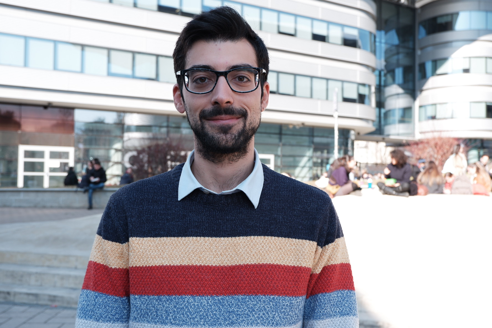

Theme 01
Innovation & knowledge
Technological knowledge, innovation dynamics, firm capabilities, and the economic effects of new technologies.
Economics of innovation · Network Analysis
Senior Assistant Professor of Economic Policy
University of Torino
I study the determinants and effects of knowledge, technology, and networks on innovation and growth—and how they can help territories and firms navigate the green and digital transitions.
Explore my research
02
About
I am a tenure-track Assistant Professor of Economic Policy at the Department of Economics and Statistics “Cognetti de Martiis”, University of Torino and a Collegio Carlo Alberto Affiliate.
I am a fellow at BRICK, Collegio Carlo Alberto, a deputy member of the Steering and Scientific Committee of HighEst Labm for Big Data Analytics and Artificial Intelligence.
I hold a PhD in Economics from the University of Torino and Collegio Carlo Alberto. My international experience includes research periods at the EU JRC, ESSEC Business School, INGENIO (CSIC-UPV), and University College Dublin.
03
Research
My research connects technological knowledge with firms, regions, and policy—using patent data, network analysis, and spatial methods.
Theme 01
Technological knowledge, innovation dynamics, firm capabilities, and the economic effects of new technologies.
Theme 02
Environmental technologies, circular-economy knowledge, green diversification, and sustainable transitions.
Theme 03
Regional development, spatial knowledge flows, technological diversification, and economic resilience.
Theme 04
Collaboration networks, embodied knowledge flows, and the green and digital transformation of firms and regions.
04
Publications
Recent work across innovation studies, economic geography, and sustainable technological change.
2026
Research Policy
Scandura, Orsatti, Quatraro, Fusillo & Bergamini
2026
Economic Geography
Fusillo, Montresor & Fatikhova
2025
Economics of Innovation and New Technology
Coda Zabetta, Fusillo, Quatraro & Scandura
2025
Eurasian Business Review
Fusillo, Orsatti & Scandura
2025
Joint Research Centre
Fusillo, Manera, Orsatti, Quatraro & Rentocchini
2023
Research Policy
Fabrizio Fusillo
05
Teaching
Teaching across doctoral, master’s, and bachelor’s programmes at the University of Torino.
PhD
Master’s
Master’s
Bachelor’s
Contact